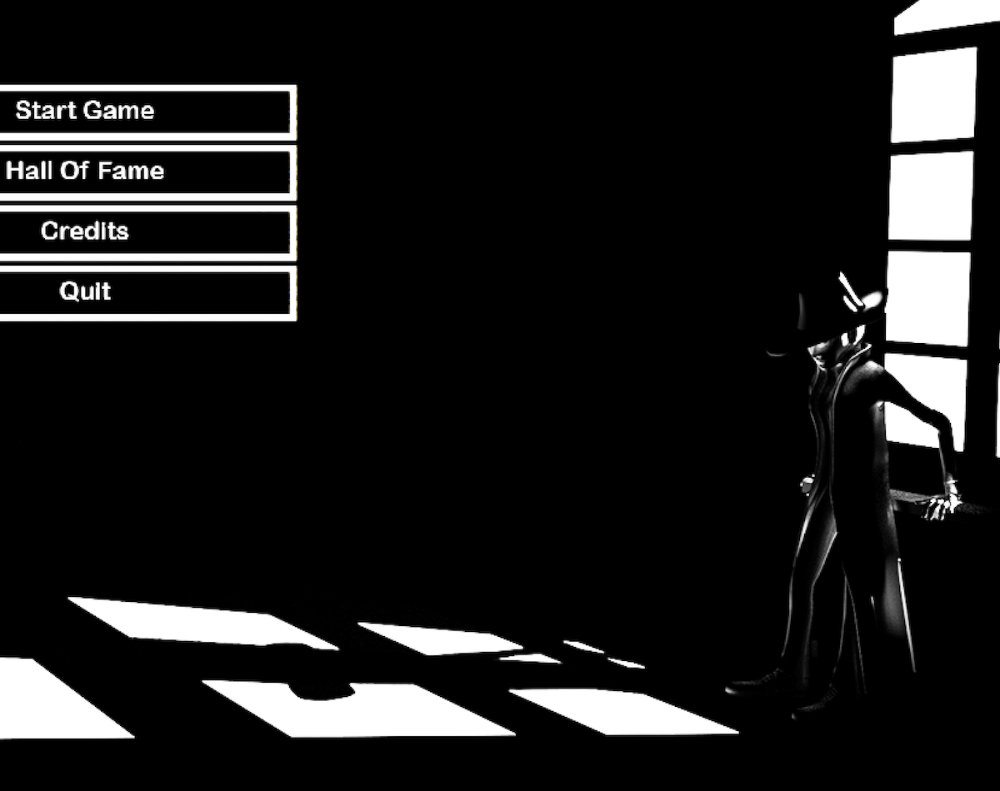

This is a story game which requires to answer question and proceed to the next level if answered correctly. Some of the questions are timed, and if the time runs out you might lose the game.
The game was done as part of the Game Design and Development course. The requirements were to use the haxe language and use a local database so that all of the information and the questions would be loaded from it.
The game was made using Haxe programming language. Also some of the code regarding the screen switcher was provided by the course.